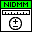
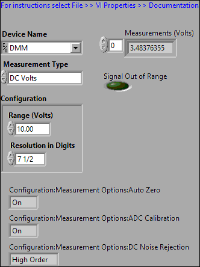
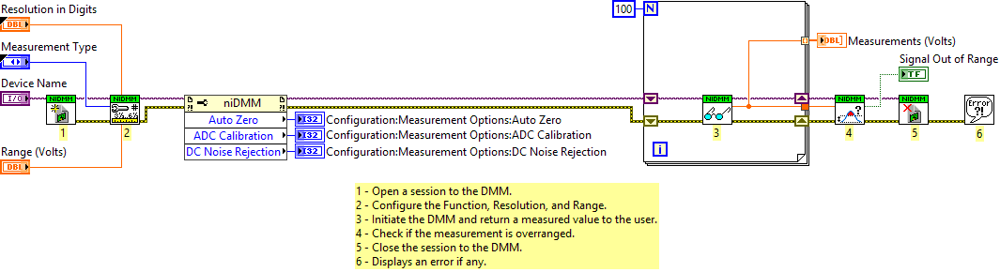

This example acquires a single DC Voltage measurement. Specify the range and absolute resolution of your input signal. The measured value will be displayed in the Measurement indicator. A Boolean indicator will indicate if the measured value is out of range.


